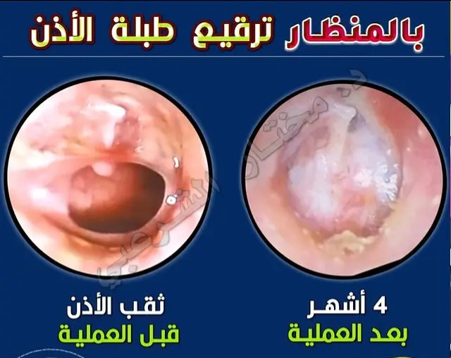

ترقيع غشاء طبلة الأذن
✍ دكتور/ مختار الشرعبي

نبذة عن عملية ترقيع غشاء طبلة الأذن
غشاء طبلة الأذن هو غشاء رقيق يفصل الأذن الخارجية عن الأذن الوسطى، وله دور أساسي في نقل الصوت ومنع دخول الجراثيم والسوائل إلى الأذن الوسطى. وقد يتعرض هذا الغشاء للثقب أو التمزق نتيجة التهابات الأذن المتكررة، أو الحوادث، أو التعرض المفاجئ لتغيرات الضغط، مما يؤدي إلى ضعف في السمع، وخروج إفرازات من الأذن، وأحيانًا التهابات متكررة.
عملية ترقيع غشاء طبلة الأذن، المعروفة طبيًا باسم "رأب الطبلة" (Tympanoplasty)، هي إجراء جراحي يهدف إلى إغلاق الثقب الموجود في الطبلة باستخدام رقعة مأخوذة غالبًا من أنسجة المريض نفسه. تهدف العملية إلى:
- تحسين القدرة السمعية.
- منع دخول الماء والجراثيم إلى الأذن الوسطى.
- تقليل خطر الالتهابات المزمنة.
- استعادة وظيفة الأذن الطبيعية.
تتراوح نسبة نجاح عملية ترقيع الطبلة بين 80% إلى 95%، وتختلف من حالة لأخرى حسب عدة عوامل مهمة، من أبرزها:
- حجم الثقب ومدته: كلما كان الثقب أصغر وحديثًا، زادت فرص النجاح.
- حالة عظيمات الأذن الوسطى: إذا كانت سليمة وغير تالفة، تكون النتائج السمعية أفضل.
- سلامة العصب السمعي: وجود ضعف في العصب قد يحد من تحسن السمع رغم نجاح الجراحة.
- عمر المريض: الاستجابة تكون أفضل غالبًا في صغار السن.
- وجود أمراض مزمنة: مثل السكري أو نقص المناعة قد يؤثر على التئام الأنسجة.
- وجود تسوس في عظام الأذن: يحتاج إلى علاج متزامن أثناء الجراحة.
- مشاكل قناة استاكيوس: قد تؤثر على تهوية الأذن ونجاح العملية.
❗️ مشاكل الأنف والجيوب الأنفية مثل انحراف الحاجز الأنفي، أو تضخم القرنيات، أو التهاب الجيوب المزمن قد تؤدي إلى فشل تهوية الأذن الوسطى عبر قناة استاكيوس، وبالتالي تؤثر على نتائج عملية الترقيع. لذلك، من الضروري تشخيص وعلاج أي خلل في الأنف قبل أو بالتزامن مع جراحة الأذن لضمان نتائج ناجحة طويلة الأمد.
تُجرى هذه العملية عادةً تحت التخدير العام باستخدام تقنيات حديثة مثل الجراحة بالمنظار، وتستغرق فترة الشفاء عدة أسابيع، مع تحسن تدريجي في السمع يبدأ غالبًا من 6 إلى 8 أسابيع بعد الجراحة، ويكتمل خلال 4 إلى 6 أشهر.
مميزات الجراحة بالمنظار
- تقنية أقل توغلاً: الجراحة بالمنظار تتطلب شقوقًا أصغر مقارنة بالجراحة التقليدية، مما يقلل من الألم والندوب.
- رؤية واضحة: توفر أدوات المنظار رؤية أفضل للأذن الداخلية، مما يساعد الجراح في إجراء العملية بدقة أكبر.
- فترة تعافي أسرع: بسبب الطبيعة الأقل توغلاً للجراحة، يمكن للمرضى العودة إلى أنشطتهم اليومية بشكل أسرع.
- تقليل المضاعفات: الجراحة بالمنظار تقلل من مخاطر العدوى والمضاعفات المرتبطة بالجراحة التقليدية.
- تحسين نتائج السمع: يمكن أن تؤدي الجراحة الناجحة إلى تحسين كبير في القدرة السمعية للمريض.

نصائح للمريض بعد عملية ترقيع غشاء طبلة الأذن
- 1. بالإمكان شرب سوائل بمجرد استيقاظك من التخدير. كذلك يمكن تناول الوجبات الخفيفة إذا كنت تستطيع دون الشعور بالغثيان أو القيء المؤقت. وتدريجيًا يمكنك تناول الأطعمة الصلبة.
- 2. حاول إبقاء رأسك مرفوعًا على 3 وسائد في الأسبوعين الأولين بعد العملية.
- 3. العودة بعد يومين للمجارحة، وبعد أسبوع لإزالة الحشوة، وبعد شهر للمتابعة. عادةً ما نستخدم خيوطًا قابلة للامتصاص ولا يلزم إزالتها.
- 4. عدم إزالة الرباط أو المجارحة إلا في المستشفى، حيث سيتم تغييرها في العودة الأولى بعد يومين وإزالتها بعد أسبوع. وعندها سيتم صرف دهان يملأ به الجزء الخارجي لقناة الأذن يوميًا لمدة شهر.
- 5. تجنب ملامسة الماء للجرح في أول أسبوع بعد العملية. كذلك تجنب دخول الماء إلى الأذن على الأقل لمدة شهر، وبعد إذن صريح من الطبيب. ويُنصح بسد قناة الأذن بقطن مغطى بالفازلين (شحم) أثناء الغسل.
- 6. تجنب نفخ الأنف. يمكن سحب أي إفرازات متراكمة في الأنف إلى الحلق وإخراجها من الفم. ومن المهم فتح الفم أثناء العطاس أو السعال.
- 7. الإقلال من حمل أي أثقال تزيد عن 5 كيلوغرام لمدة شهر بعد العملية.
- 8. تجنب تدخين السجائر.
- 9. تناول المضادات الحيوية الخاصة بك بالجرعة وللفترة المحددة. وتناول الأدوية المهدئة حسب الحاجة، ولا تستخدم قطرة الأنف أكثر من 5 أيام.
- 10. من المتوقع الشعور بالنبض والفرقعة وغيرها من الأصوات غير العادية في الأذن، كذلك الآلام الحادة العرضية. وفي بعض الأحيان قد تشعر كما لو كان هناك سائل في الأذن أو الشعور بامتلاء.
- 11. قد تشعر بالدوار والغثيان الخفيف خصوصًا عند حركة الرأس، ولا داعي للقلق. حاول تقليل الحركة المفاجئة وستزول تدريجيًا.
- 12. الأذن مسدودة بمواد علاجية تذوب خلال شهر من العملية، وقد تلاحظ إفرازات مائية أو محمرة نتيجة ذوبانها. قد تلاحظ انخفاضًا في السمع أو تنميلًا أو وخزًا في الأذن، أو جفاف الفم وتغير الطعم، وطنين في الأذن. كلها أمور متوقعة وستختفي بمرور الوقت.
- 14. نادرًا ما يُلاحظ تحسن السمع بعد الجراحة مباشرة، وذلك مؤقتًا بسبب تورم أنسجة الأذن وتكدّس في قناة الأذن. يمكن ملاحظة التحسن من 6 إلى 8 أسابيع بعد الجراحة، وقد يستغرق التحسن الأقصى من 4 إلى 6 أشهر.
❗ يجب العودة أو التواصل الفوري في الحالات التالية:
- 1. نزيف مفرط أحمر فاتح لا يتوقف بالضغط مدة 10 دقائق.
- 2. دوار شديد ومتكرر أو إذا استمر لأكثر من 72 ساعة بعد الجراحة.
- 3. خروج إفرازات صفراء كريهة الرائحة من الأذن أو الجرح خلف الأذن.
- 4. عند حصول زكام أو احتقان في الأنف يجب استشارة طبيبك فورًا.